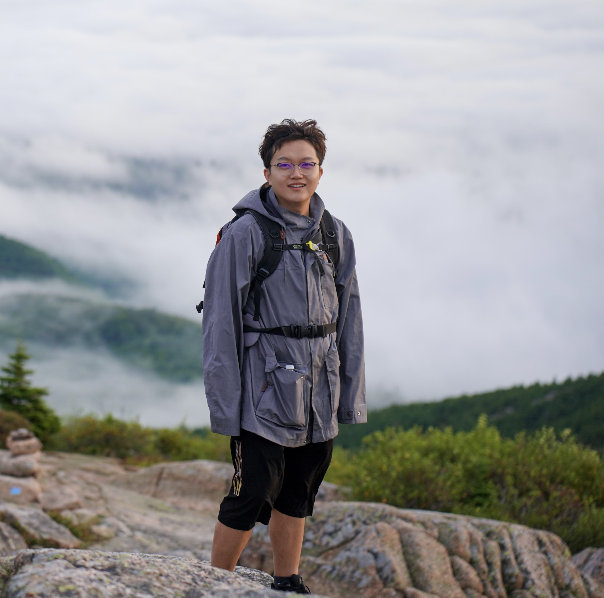
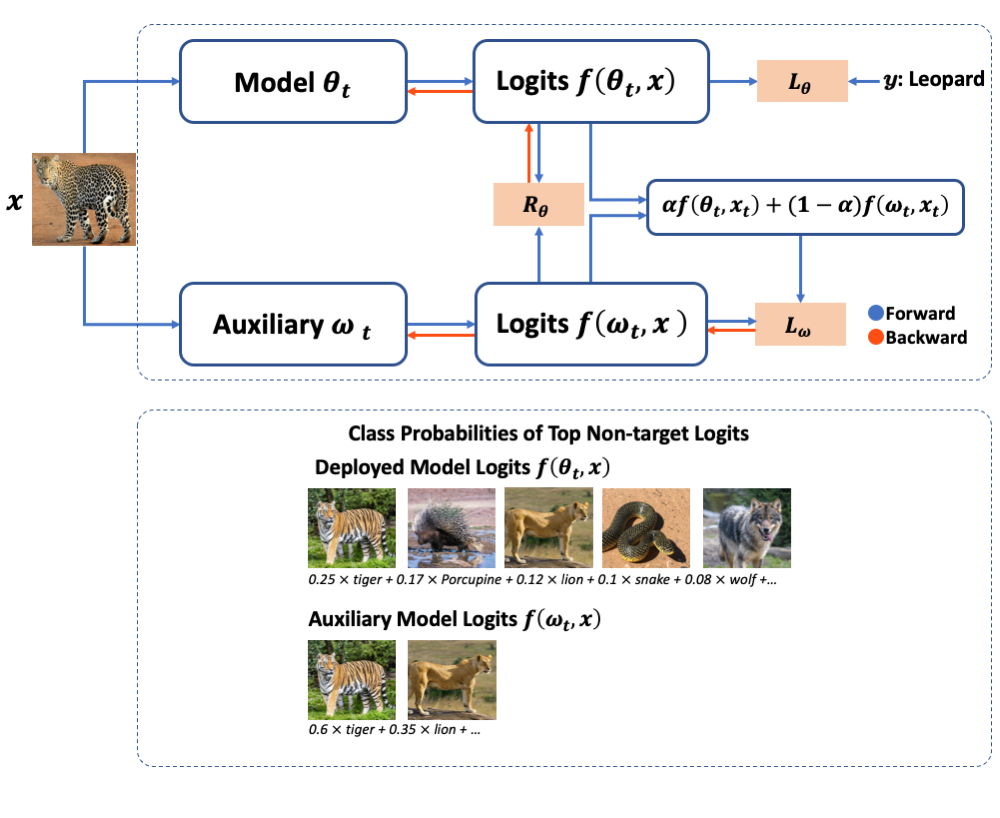
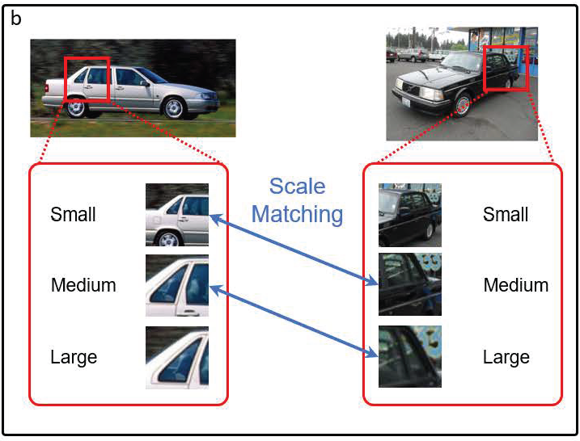
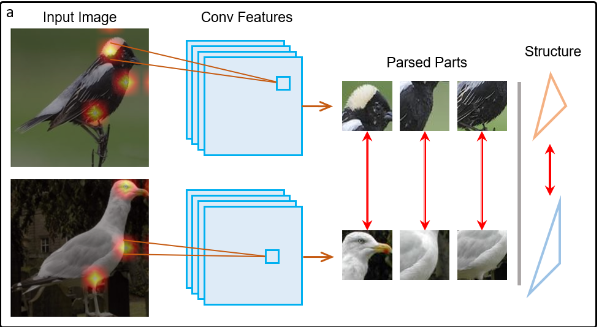
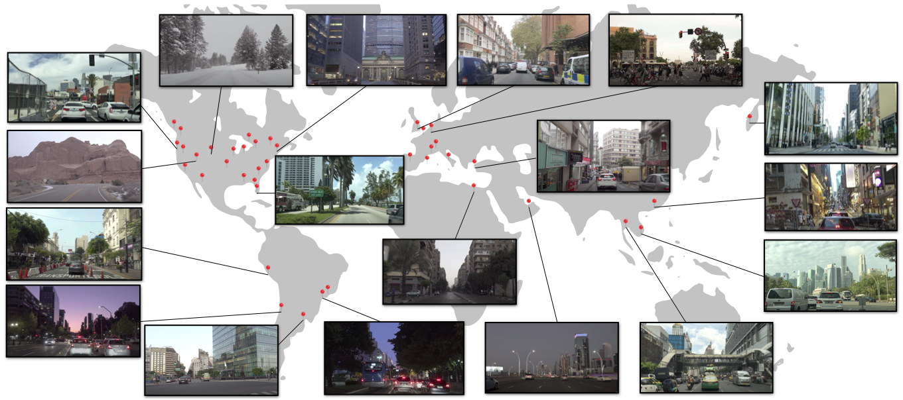
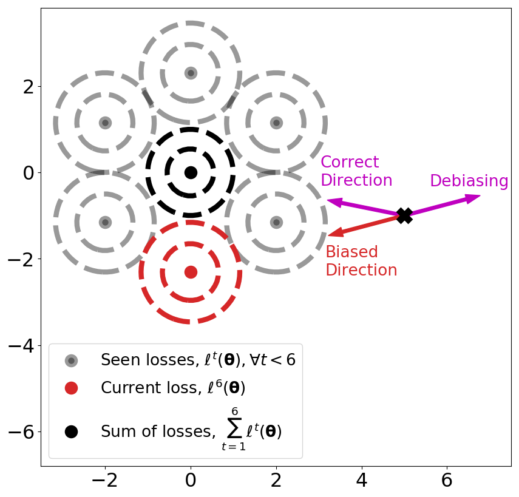
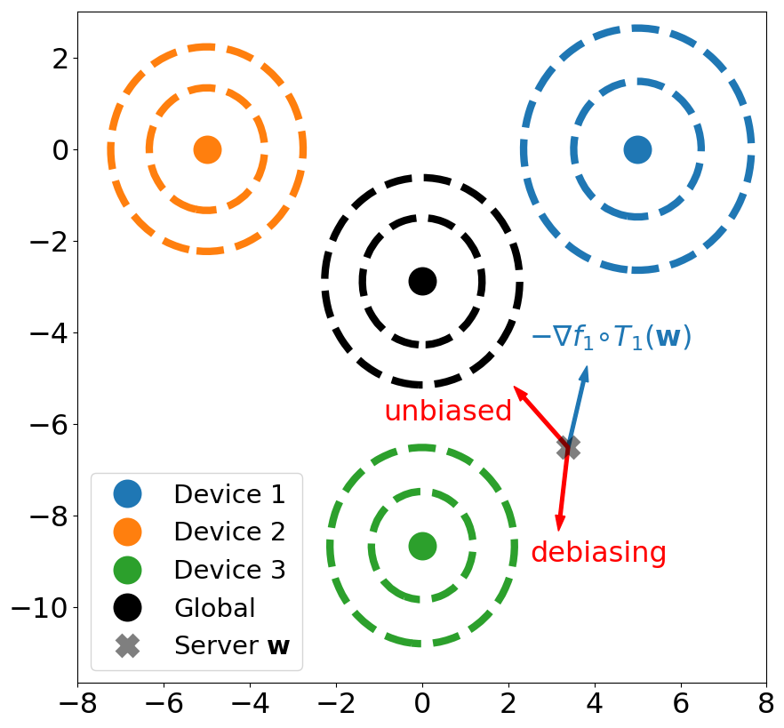
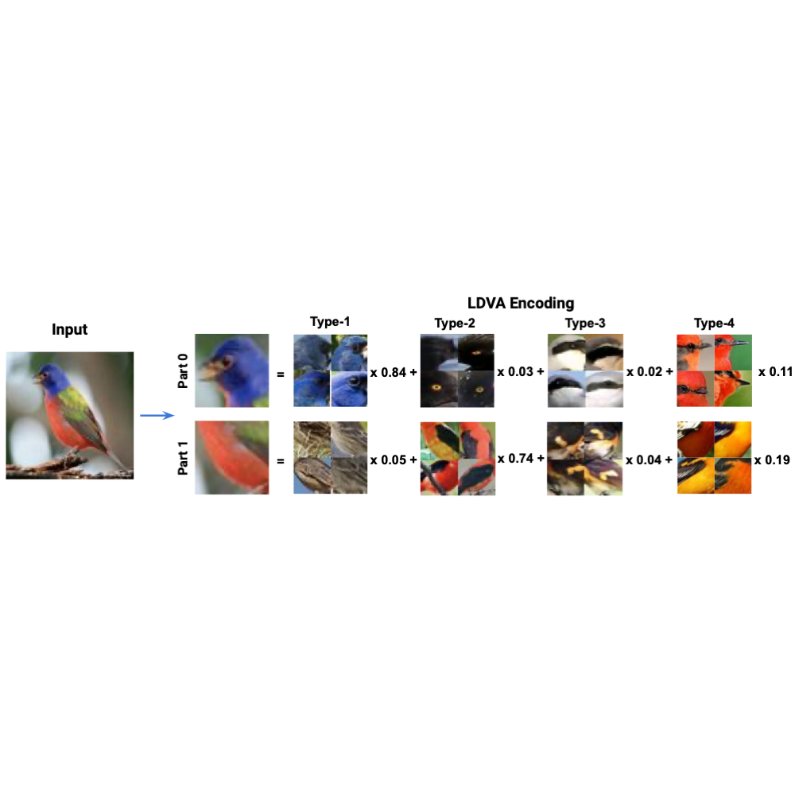

|
Ruizhao Zhu I am a PhD student at Boston University, advised by Prof. Venkatesh Saligrama. I also work with Prof. Eshed Ohn-Bar. My research is mainly about efficient training for deep leanring algorithm and its application on computer vision and autonomous driving. Prior to BU, I got my Master degree at Brown University working with Prof. Benjamin Kimia on vision navigation. I have just spent a wonderful summer in Pasadena with Computer Vision team at AWS with Yuting Zhang, Qi Dong and Zhuowen Tu working on vision foundation model. I am also fortunate to intern at Dataminr and Bosch Research before. |
 |
{kind=link}
ResearchI'm interested in efficient machine learning and its applications in computer vision and autonomous driving. |
|

|
Deep Companion Learning: Enhancing Generalization Through Historical Consistency
Ruizhao Zhu, Venkatesh Saligrama, ECCV, 2024 paper (Comming Soon!) Deep Companion Learing (DCL) enhances generalization on training a deep neural networks in many settings. |

|
Learning to Drive Anywhere
Ruizhao Zhu, Peng Huang, Eshed Ohn-Bar, Venkatesh Saligrama, CoRL, 2023 project page / video / paper Anyd learns a unified driving model across the world, solving socially heterogeneous cases like Left-hand driving and Pittsburgh left. |
|


|
Fine-grained Few-shot Recognition by Deep Object Parsing
Ruizhao Zhu, Pengkai Zhu, Samarth Mishra, Venkatesh Saligrama, CVPRW, 2022. BMVC, 2023. paper DOP can automatically parse a object into semantically salient parts. Fine-Grained Few-shot learning get SOTA performance utilizing such representations. |
|

|
SelfD: Self-Learning Large-Scale Driving Policies From the Web
Jimuyang Zhang, Ruizhao Zhu, Eshed Ohn-Bar CVPR, 2022 paper / video SelfD is a new semi-supervised framework learning scalable driving by utilizing large amounts of online monocular images. |
|

|
Memory Efficient Online Meta Learning
Durmus Alp Emre Acar, Ruizhao Zhu, Venkatesh Saligrama, ICML, 2021. Paper MOML debiases model updates along training. It outperform baselines on both seen and unseen task without saving historical tasks. |
|

|
Debiasing Model Updates for Improving Personalized Federated Training
Durmus Alp Emre Acar, Yue Zhao, Ruizhao Zhu, Ramon Matas Navarro, Matthew Mattina, Paul Whatmough, Venkatesh Saligrama, ICML, 2021. Paper A new problem setting for personalized federated learning. |
|

|
Low Dimensional Visual Attributes: An Interpretable Image Encoding
Pengkai Zhu,Ruizhao Zhu, Samarth Mishra, Venkatesh Saligrama ICPR workshop, 2021. Paper An interpretable object part parsing representation. |
Teaching
Boston University EC523 - Machine Learing - Spring 2021
Boston University EC523 - Deep Learning - Fall 2020
Brown University CSCI1430 - Computer Vision - Spring 2019
Brown University CSCI1450 - Intro to Probability for Data Science - Fall 2018
|
Professional ActivityInternship at AWS AI (Summer 2023), Dataminr (2022), Bosch Research (2021), SF Tech (2018), Duke University (2016). Exchange Student at KAIST (Fall 2015, Spring 2016), UCLA (Summer 2014). Reviewer for CVPR, ECCV, BMVC, ICLR, ICML, NeurIPS, IJCAI, Machine Intelligence Research. Volunteer for CoRL2023 ICML2021. |
|
This page is borrowed from this website's source code. |